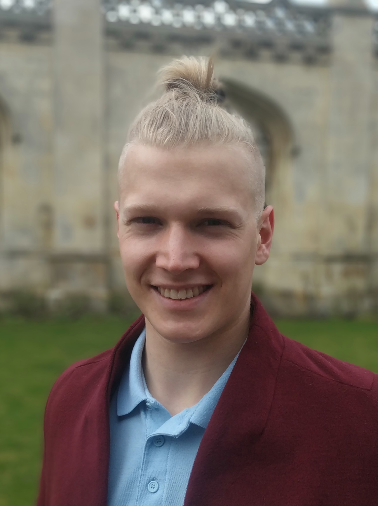

h.klyne@statslab.cam.ac.uk
I am a second year PhD student in statistics at the University of Cambridge, supervised by Rajen Shah. I am a member of Emmanuel College, and compete for the university gymnastics team.
My research interests include high-dimensional statistics, semiparametric statistics and causal inference. I am currently working on methodology to enable the use of machine learning methods for quantifying causal effects.
I have provided small-group teaching for the Statistical Modelling and Mathematics of Machine Learning undergraduate courses. I offer free statistical consulting services to members of the university through the Statistics Clinic, and co-organise an AI safety reading group for students and professionals in Cambridge.